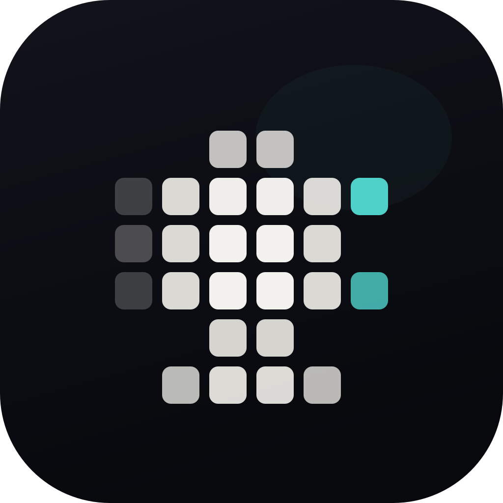
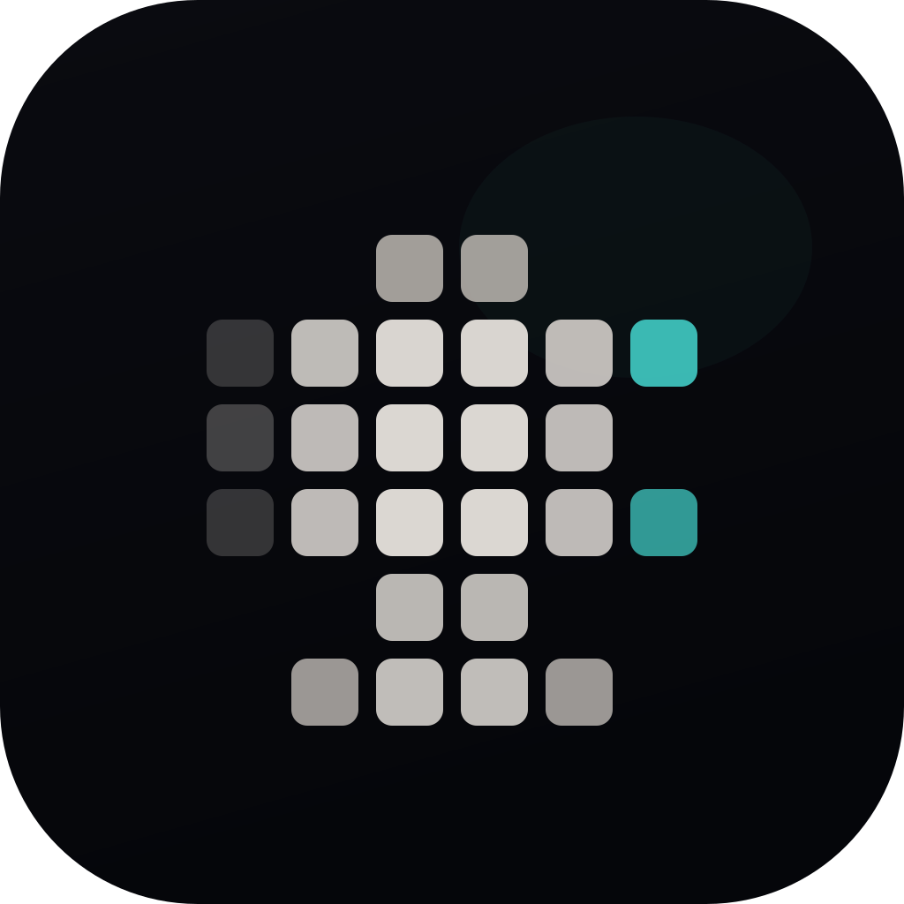
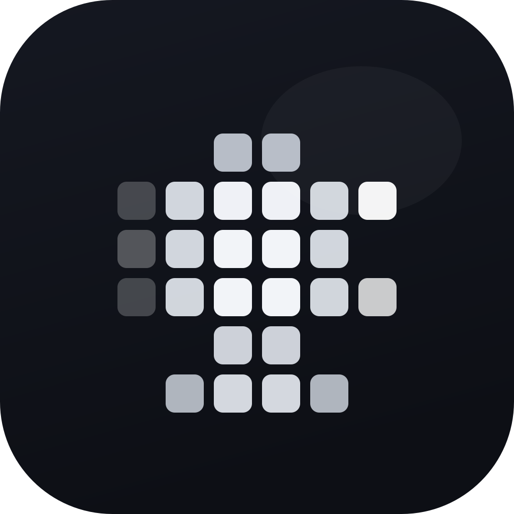
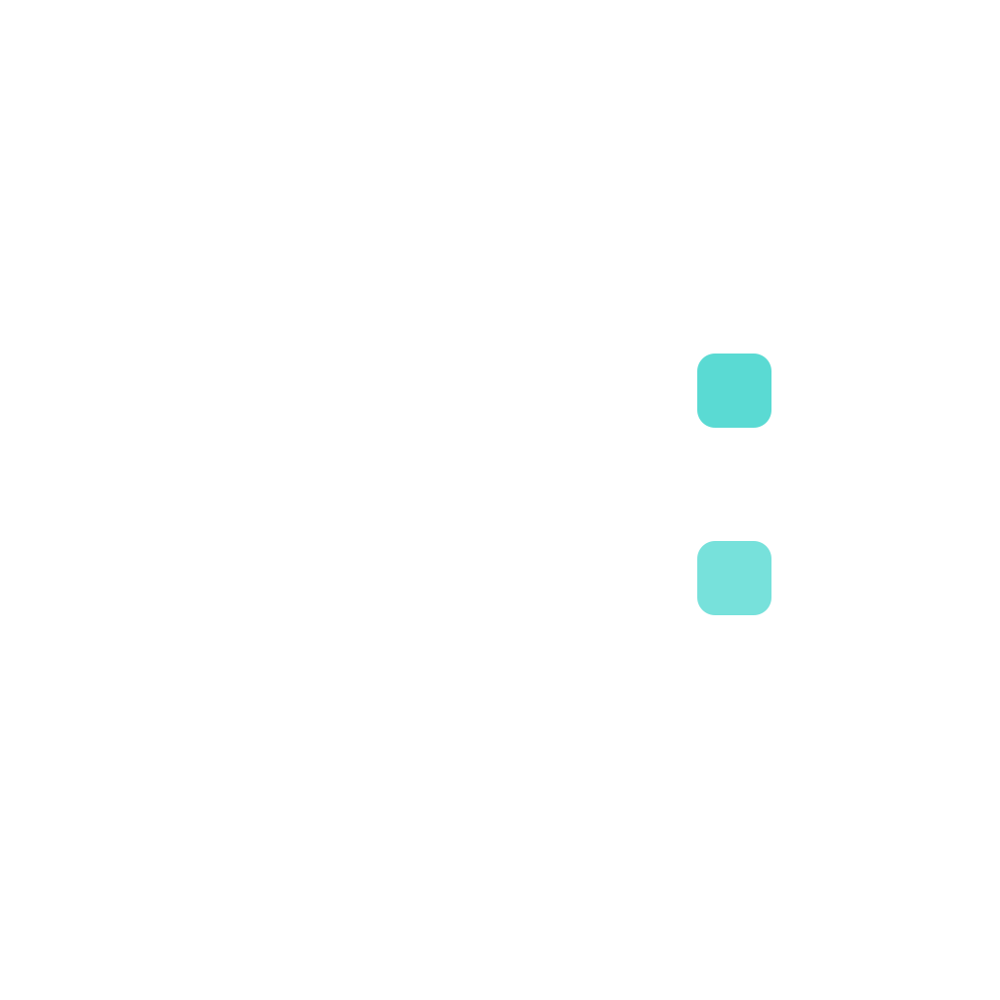

Revised with your note in mind: outermost layer stays empty, and the mic sits a little lower. I also made the cells feel slightly smaller so the whole thing breathes more instead of crowding the box.

Removed the perimeter debris, shifted the whole silhouette down by 32px, and made the cell footprints a little smaller so the icon feels calmer.
Open these in Icon Composer next if this direction feels better: 2-growth.svg, 3-mic-body.svg, 4-sparks.svg.




